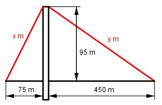

Pythagoras Aufgabe 16 Berechnen Sie von der Hängebrücke die Längen x und y der beiden Spannseile in m.  x2 = 752 m2 + 952 m2 = 14 650 m2 |√ x = 14 650m2 = 121 m y2 = 952 m2 + 4502 m2 = 211 525 m2 |√ y = 211 525m2 = 459,9 m
Pythagoras Aufgabe 16 Berechnen Sie von der Hängebrücke die Längen x und y der beiden Spannseile in m.
